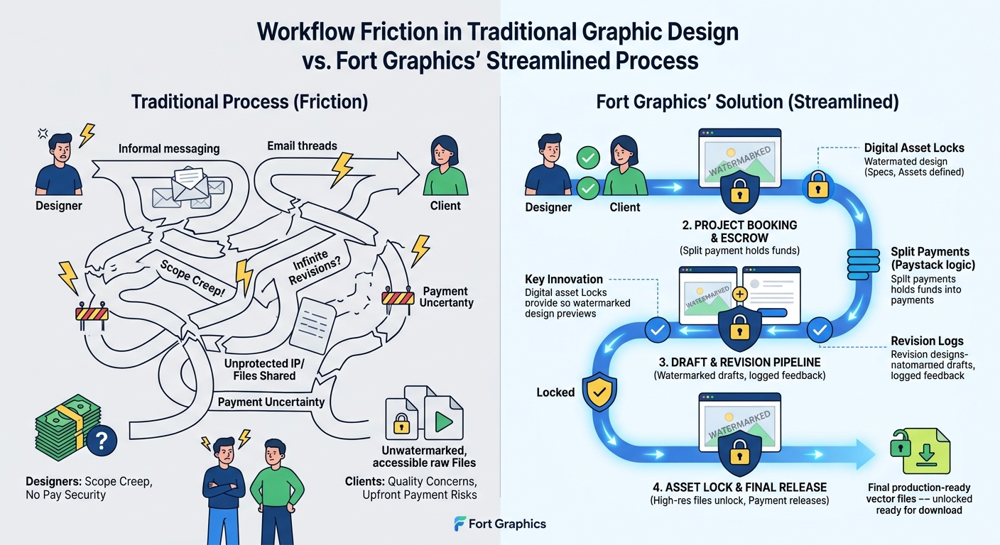

State Architecture
Real-Time Application State Management in Single-Page Apps
Exploring predictable state synchronization patterns across multi-user web environments.
Read Full ArticleArchitecting Hardware-Accelerated Graphical Pipelines for High-Performance Web Applications
In early computer graphics history, drawing shapes, sprites, or bitmap data directly onto a frame buffer required calculating pixel coordinates, color bit manipulation, and executing byte operations individually inside CPU registers. As graphical interfaces evolved to support windowing systems, desktop composition, and complex interactive animations, hardware manufacturers developed dedicated raster processing chips designed for a single primary operation: moving contiguous blocks of memory from one memory location to another at lightning speed. This fundamental computer graphics operation is known as Bit-Block Transfer, or simply Blitting.
Today, as modern web applications transition from static HTML pages into complex, high-performance web applications—such as web-based vector graphics suites, interactive dynamic board games, CAD canvas tools, and real-time data visualization platforms—blitting remains one of the most vital rendering optimizations available in browser engineering. Understanding how blitting translates from assembly-level video memory manipulation to HTML5 Canvas2D APIs, OffscreenCanvas buffers, and WebGL texture copies is essential for building silky-smooth 60 FPS and 120 FPS web user interfaces.
At its core, a blit operation takes a rectangular region of pixel data from a source bitmap array and writes it directly into a targeted rectangular area of a destination bitmap buffer. Rather than evaluating procedural drawing logic—such as calculating trigonometric equations for circle rasterization or computing Bezier curve interpolation points—blitting treats graphical assets as pre-rendered pixel matrices stored directly in system RAM or dedicated GPU VRAM (Video Random Access Memory).
In modern web browsers, when developers call the standard CanvasRenderingContext2D.drawImage() method or dispatch WebGL texture copying routines (such as gl.texSubImage2D()), they are instructing the underlying browser engine (Chromium Blink, Firefox Gecko, or Apple WebKit) to perform hardware-accelerated bit-block transfers directly on framebuffers.
Traditional CPU vector rasterization requires expensive step-by-step pipeline execution on every single frame update:
By contrast, when a complex vector graphic or static layer is pre-rendered once into an offscreen canvas buffer, subsequent frame renders skip vector processing entirely. The engine simply executes a direct VRAM memory blit—copying the pre-rendered pixel block onto the active canvas display target in sub-millisecond execution times.
To understand why blitting is critical for high-performance frontend engineering, we must examine how browser rendering pipelines execute. Standard DOM elements (such as <div>, <svg>, or <span>) depend entirely on the browser's main JavaScript event loop. Whenever an element's position, size, or style transforms, the browser engine must execute a multi-stage rendering flow:
When an application contains thousands of interactive objects (such as complex marketplace cards, real-time interactive game pieces, or custom graphical overlays), triggering main-thread layout reflows forces frame completion times far beyond the strict 16.67ms target required for 60 FPS refresh rates. This bottleneck is illustrated below in our architectural comparison table.
| Execution Strategy | Pipeline Stage Focus | Main-Thread Impact | Frame Time (1,000+ Items) |
|---|---|---|---|
| Standard HTML/DOM | Reflow, Repaint, Composite Pass | Extremely High (Triggers Layout Thrashing) | ~45ms - 120ms (Severe Frame Drops) |
| Direct 2D Path Drawing | Continuous CPU/GPU Vector Rasterization | Moderate-High (Repeated Path Calculations) | ~18ms - 32ms (Janky Animations) |
| Offscreen Canvas Blitting | Direct VRAM Bit-Block Transfer Copy | Near-Zero (Pre-calculated Pixel Transfers) | ~0.8ms - 2.5ms (Rock Solid 60/120 FPS) |
Implementing an enterprise-grade blitting architecture requires dividing renderable visual elements into two distinct categories: Static Background Layers (which rarely change) and Dynamic Foreground Elements (which update rapidly based on user interaction). By caching static assets onto an offscreen canvas instance, we can blit the background layer in a single call before rendering dynamic components on top.
Below is a production-ready JavaScript implementation demonstrating offscreen buffer creation, static batch blitting, and dynamic loop rendering designed for web platforms:
class BlitterPipeline {
constructor(canvasId, width, height) {
// Initialize visible target canvas
this.mainCanvas = document.getElementById(canvasId);
this.ctx = this.mainCanvas.getContext('2d', {
alpha: false, // Disables transparent background overhead
desynchronized: true // Bypasses extra compositor latency where supported
});
this.width = width;
this.height = height;
this.mainCanvas.width = width;
this.mainCanvas.height = height;
// Initialize Offscreen Canvas Buffer for Blitting
this.offscreenBuffer = document.createElement('canvas');
this.offscreenBuffer.width = width;
this.offscreenBuffer.height = height;
this.offCtx = this.offscreenBuffer.getContext('2d', { alpha: true });
this.staticElements = [];
this.isBufferDirty = true;
}
// Register static vector/graphic elements
registerStaticNode(node) {
this.staticElements.push(node);
this.isBufferDirty = true;
}
// Rasterize static vector nodes once into offscreen VRAM memory
bakeOffscreenBuffer() {
if (!this.isBufferDirty) return;
// Clear offscreen frame
this.offCtx.fillStyle = '#0a192f';
this.offCtx.fillRect(0, 0, this.width, this.height);
// Draw complex vector shapes onto offscreen surface
this.staticElements.forEach(item => {
this.offCtx.save();
this.offCtx.fillStyle = item.color;
this.offCtx.strokeStyle = item.borderColor || 'transparent';
this.offCtx.lineWidth = item.borderWidth || 0;
this.offCtx.beginPath();
this.offCtx.arc(item.x, item.y, item.radius, 0, Math.PI * 2);
this.offCtx.fill();
if (item.borderWidth) this.offCtx.stroke();
this.offCtx.restore();
});
this.isBufferDirty = false;
console.log('[BlitterPipeline] Offscreen buffer baked successfully.');
}
// Execute the Bit-Block Transfer (Blit) pass
renderFrame(dynamicEntities = []) {
// Step 1: Blit static background buffer directly to visible canvas (Fast memory copy)
this.ctx.drawImage(
this.offscreenBuffer,
0, 0, this.width, this.height,
0, 0, this.width, this.height
);
// Step 2: Draw active dynamic elements directly over the blitted background
dynamicEntities.forEach(entity => {
this.ctx.fillStyle = entity.color;
this.ctx.fillRect(entity.x, entity.y, entity.width, entity.height);
});
}
}
Engineering Pro-Tip: Always set { alpha: false } on your main visible 2D context whenever an application features a solid full-screen background. Disabling the alpha channel tells browser rendering engines that they do not need to composite the canvas against underlying HTML DOM elements, cutting canvas framebuffer memory overhead instantly.
Beyond full-canvas layer caching, blitting shines brightest when utilizing Sprite Sheet Blitting and Dirty Region Blitting.
Instead of creating dozens of individual image elements or network requests for UI icons, card assets, or game character states, software engineers aggregate all visual assets into a single master image atlas (sprite sheet). During execution, `drawImage()` takes source cropping parameters (`sx`, `sy`, `sw`, `sh`) to blit a precise slice from the master sprite sheet directly to destination coordinates (`dx`, `dy`, `dw`, `dh`):
// Blit a precise 64x64 pixel sprite from a master texture atlas
function blitSpriteSlice(ctx, atlasImage, srcX, srcY, destX, destY) {
ctx.drawImage(
atlasImage,
srcX, srcY, 64, 64, // Source Crop Bounding Box inside Sprite Atlas
destX, destY, 64, 64 // Destination Canvas Target Bounding Box
);
}
In massive canvas environments (such as interactive 2D map views, board game layouts, or graphic editor workspaces), re-blitting the entire screen on every frame is wasteful. Dirty Region Blitting tracks bounding boxes surrounding updated objects and blits only the affected sub-rectangles of the frame buffer:
ctx.clearRect(x, y, width, height).When executing blitting pipelines inside continuous requestAnimationFrame rendering loops, JavaScript memory allocations must be strictly controlled. Creating short-lived objects—such as temporary array buffers, geometry vectors, or configuration options—allocates transient heap memory inside the V8 or JavaScriptCore engines. When heap usage reaches capacity, the browser triggers a Garbage Collection (GC) sweep.
Garbage collection sweeps temporarily freeze main-thread execution for anywhere between 5ms to over 50ms, resulting in visible micro-stuttering ("jank"). To maintain zero-jitter frame rates across high-frequency canvas applications, follow these strict memory management rules:
ctx.fillStyle or ctx.font to new string values). Group elements sharing identical fill styles together.ctx.createImageData() or ctx.getImageData() inside frame loops; direct pixel manipulation via TypedArrays bypasses VRAM blitting hardware acceleration and forces slow CPU roundtrips.